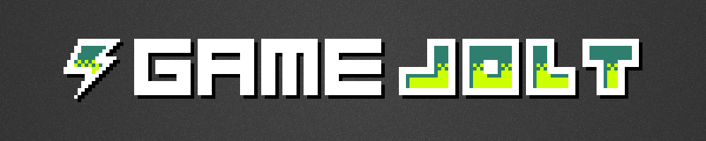

GameJoltDotNet
GameJoltDotNet is a GameJolt Game API client for the .NET Framework
and can therefore be used by every .NET language, like C#, VB.NET or F#.
For best portability this library is based on .NET Standard 1.3 and can therefore be used on a wide variety of different platforms. The following platforms are supported:
| Framework | Version |
|---|---|
| .NET Standard | 1.3 |
| .NET Core | 1.0 |
| .NET Framework | 4.6 |
| Mono | 4.6 |
| Xamarin.iOS | 10.0 |
| Xamarin.Mac | 3.0 |
| Xamarin.Android | 7.0 |
| Universal Windows Platform | 10.0 |
GameJolt API Overview
| Service | Description |
|---|---|
| Datastore | Manipulate items in a cloud-based data storage. |
| Time | Get the server's time. |
| Scores | Manipulate scores on score tables. |
| Sessions | Set up sessions for your game. |
| Trophies | Manage trophies for your game. |
| Users | Access user-based features. |
| Friends | List a user's friends. |
This library is heavily based on the async/await mechanism of C# and can therefore be used without blocking the main thread. Furthermore it provides a convenience facade API, which internally uses the async/await API, but provides a simple, callback based API as a front end.
Example
First of all you have to create a new api instance:
var api = new GameJoltApi(gameId, privateKey);
Afterwards you can directly use the different GameJolt features.
// by using async/await:
var response = await api.Scores.FetchAsync();
if(response.Success) {
// response.Data contains the list of scores
}
// or by using the callback mechanism:
api.Scores.Fetch(callback: response => {
if(response.Success) {
// response.Data contains the list of scores
}
});
Some APIs require an authenticated user, because they set or get data for a certain user. The authentication can be done like so:
var auth = await api.Users.AuthAsync(userName, userToken);
if(auth.Success) {
api.Trophies.SetAchieved(auth.Data, trophyId);
}